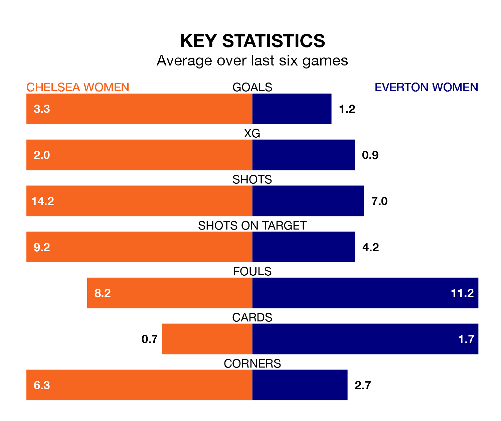

Mid-season relegation candidates Everton Women face a challenge away against high-flying Chelsea Women at Kingsmeadow on Sunday.
Everton Women are ninth in the FA Women's Super League table, and have picked up three wins and two draws in their 12 games to date.
The Blues, meanwhile, are top of the standings with 31 points, having won 10 and drawn one.
With 38 goals in 12 games so far this season, Chelsea are the league's highest scorers with 3.2 goals per game. And they are conceding fewer than average, letting in 12 goals at a rate of 1.0 per game.
Everton, meanwhile, are below average scorers, with 0.8 goals per game, compared to a league average of 1.7. They have conceded 1.8 goals per game.
In Lauren James, the Blues have one of the league's most on-form strikers so far this season. She has notched 12 goals in 11 appearances, to sit second in the scoring charts.
Her goal rate of one every 66 minutes is much quicker than that of Megan Finnigan, the Toffees's top scorer with a goal every 360 minutes, and a total of three goals in 12 games.
In the last 10 years, Chelsea and Everton have played each other on 16 occasions. Chelsea won 14 of them, Everton one, and they drew once.
On average, the Blues scored 2.8 goals and the Toffees 0.4 in those matches.
Their last meeting was on November 12, when Chelsea won 3-0 away.
The home side are in fantastic form in FA Women's Super League, with five wins and one loss from their last six games.
With two wins and a draw over that period, the visitors' form is much worse – they have taken seven points from 18, compared to Chelsea's 15.
Chelsea's last match was on January 27, a 3-0 win against Brighton and Hove Albion Women, with James (two) and Francesca Kirby getting the goals for the Blues.
Everton lost 1-0 against Leicester City WFC last time out, on January 28.
Updated: 13:20 (UTC), 29/01/24